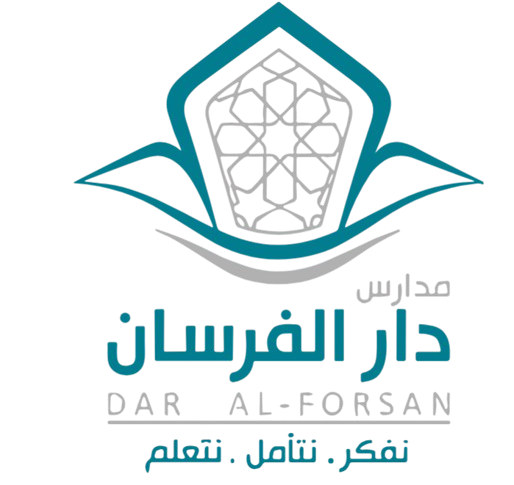

طلب رقمنة زيارة فريق التقويم الخارجي
مقترح مشترك لفريق العمل والإشراف الأكاديمي للقسم — مشروع ربط الشواهد بالسجلات — قسم الدبلوما الأمريكية (بنين) — العام الدراسي 2026 - 2027 م
1 · ما نتطلع إليه
أن نقدّم عملنا إلى فريق التقويم الخارجي كما نحب أن يُرى: منظماً وواضحاً وسهل الوصول. لكل مؤشر مجلد واحد يضم سجلاته وتقريره البصري وصوره، يُفتح بضغطة أو بمسح رمز QR، ونتابع حالة المؤشرات كلها معاً من صفحة واحدة نتشاركها.
2 · ما نودّ أن ييسّره المشروع علينا
- شواهدنا مرتبطة بـ52 مؤشراً و147 سجلاً موزعة على الفقرات، وقد يصعب على الزائر (وعلينا أحياناً) الوصول إلى سجل بعينه في وقت قصير.
- نحتاج إلى شكل موحد للشواهد المصوّرة، وإلى اتفاق معلن بيننا على عددها وعلى حماية خصوصية طلابنا فيها.
- ونحتاج إلى صورة واحدة نراها جميعاً: ما اكتمل، وما نتعاون على إنجازه، ومن يتولى كل مؤشر.
3 · ما نقترحه معاً
| المكوّن | كيف يخدمنا |
|---|---|
| لوحة المتابعة | صفحة نتشاركها: يرى فيها كل مجال وكل زميل ما اكتمل وما بقي وماذا يفعل الآن، مع «نظرة الإدارة» التي تلخّص الوضع في جملة واحدة. |
| مرجع الهيئة | نسخة رقمية من تقرير مصادر سجلات الهيئة، وبجانب كل مؤشر رابط مجلده في Drive. |
| مجلدات Drive | شجرة كاملة (4 مجالات، 11 معياراً، 52 مؤشراً، 52 فقرة) نرفع فيها السجلات والصور. |
| مولّد التقرير البصري | يكتب بيانات المؤشر والسجل الداعم ورمز QR تلقائياً، ويرتّب الصور الست التي يختارها الزميل من جهازه، ويُخرج صفحة A4 موحدة. |
| دليل التصوير | 362 لقطة مقترحة لـ52 مؤشراً، مستخلصة من إضاءات دليل معايير التقويم والاعتماد المدرسي (فبراير 2026). |
| تقرير استلام المهام (ورقي) | نسخة مطبوعة لكل مجال ولكل زميل، تكون مرجعاً فورياً بين يديه: يجد فيها سجلاته وممن يطلبها، ويضع علامة ✔ كلما أنجز خطوة، ثم يسلّمها إلى منظّم المشروع (مهندس بيانات النظام) لنقابلها معاً بحالة اللوحة. |
| رفيق فريق التقويم الخارجي | جهاز آيباد مخصص يعرض عملنا كاملاً لفريق التقويم الخارجي أثناء الزيارة. وصيغة العرض وما يُطبع منه نتفق عليها معاً بعد أن نتفق على المقترح. |
4 · أين نقف اليوم
- بفضل جهد فريق التقويم الذاتي الداخلي للمدارس على مدى عامين دراسيين، وتأمين الشواهد في درايف مكتب الإشراف والتطوير الرسمي، بلغت مرحلة جمع الشواهد وإتمام التقويم الذاتي نحو 99% بتاريخ 20-09-2026 (من 76% عند إقفال 2025-2026). ومشروعنا هذا يبدأ من حيث انتهى ذلك الجهد.
- جهّزنا معاً: مجلدات المؤشرات في Drive، ولوحة المتابعة، ومرجع الهيئة، والقالب المحدّث للتقرير البصري ومولّده، ودليل التصوير.
- اتفقنا على مسميات المجالات والمعايير والمؤشرات من دليل معايير التقويم والاعتماد المدرسي (فبراير 2026).
- حدّدنا فرق العمل: 4 مشرفين و12 زميلاً، وتوزيع المؤشرات بينهم مقترح، وننتظر فيه رأي المشرفين.
- لم نبدأ بعد جمع الشواهد لهذه المرحلة؛ فلا مؤشر منجزاً اليوم، ونبدأ حين نتفق على المقترح.
5 · حجم العمل بيننا
| المجال | المؤشرات | داخل تقرير السجلات | خارج تقرير السجلات | مجلدات السجلات | الصور المطلوبة | ساعات تقديرية | المشرف · الزملاء |
|---|
• «داخل تقرير السجلات» (28 مؤشراً): ترد لها سجلات في تقرير الهيئة. «خارج تقرير السجلات» (24 مؤشراً): تُقاس بوسائل أخرى كالاختبارات الوطنية والملاحظة الصفية والاستبانات والمعاينة.
• الساعات تقدير أولي: 3 ساعات لكل مؤشر (تصوير وتقرير) + 15 دقيقة لكل مجلد سجل، ونراجعها معاً بعد التجربة. ويتركز الجهد في المجال الأول (79% من مجلدات السجلات)، ولذلك نقترح أن نتعاون فيه.
6 · نبدأ بتجربة أولى
نقترح أربعة مؤشرات، واحداً من كل مجال، تتنوع شواهدها: وثائق، وحصة دراسية، ونشاط، ومرافق. والغاية: أن نرى معاً ما سينتجه المشروع فعلاً، ونصحّح ما يلزم بتكلفة صغيرة قبل أن نطبّقه على بقية مؤشراتنا.
| المؤشر | المجال | ما سنجرّبه | الزميل المقترح (منسّق المؤشر) |
|---|---|---|---|
| 1-1-1-1 · الخطة التشغيلية | 1 | مؤشر شواهده سجلات ووثائق | أ. سعيد الجهني |
| 2-1-1-3 · تنويع استراتيجيات التدريس | 2 | مؤشر خارج تقرير السجلات، شواهده من حصة دراسية | أ. مصطفى أشرف |
| 3-2-1-3 · الممارسات الصحية | 3 | مؤشر خارج تقرير السجلات، شواهده من نشاط أو فعالية | أ. إسلام صابر |
| 4-2-1-2 · صيانة المبنى | 4 | مؤشر شواهده سجل الصيانة وصور المرافق | أ. ضياء حسين |
كيف نطمئن إلى نجاح التجربة؟ (مقترح للنقاش)
- أن تكتمل المؤشرات الأربعة بالتعريف الذي نتفق عليه: السجلات مرفوعة، وست صور غير مكررة في كل تقرير، وتقرير بصري بالقالب، ورمز QR يعمل، ومراجعة المشرف وإقراره.
- أن تخرج التقارير متسقة الشكل بين الزملاء الأربعة.
- أن تخلو الشواهد من وجوه طلاب بلا موافقة ومن بيانات حساسة.
- أن نعرف الزمن الفعلي للمؤشر الواحد، لنعدّل خطتنا للمؤشرات الباقية.
7 · جدولنا الزمني
المدد تقديرية، وتستطيعون تعديلها أعلاه. وإذا أدخلتم موعد الزيارة حُسبت التواريخ عكسياً منه، لنرى معاً هل يتسع الوقت لنا.
8 · ما نحتاجه من بعضنا
| المورد | التفصيل |
|---|---|
| أيدينا وأوقاتنا | 16 زميلاً (4 مشرفين و12 عضواً) بنحو 192 ساعة مجتمعة (بمتوسط 16 ساعة للزميل) على امتداد المراحل، نراجعها معاً بعد التجربة. |
| جهاز العرض | جهاز آيباد واحد مخصص لعرض عملنا على فريق التقويم الخارجي، يتولى أحدنا مسؤوليته، مع شاحن ونسخة احتياطية. |
| التخزين | أقل من 1 جيجابايت تقريباً (312 صورة بحجم محدود + 52 ملف PDF). |
| البرمجيات | لا ترخيص جديد في التصميم الحالي؛ نعمل على Google Drive وصفحات الويب الحالية للبوابة. |
| تدريب | جلسة قصيرة نلتقي فيها على لوحة المتابعة ومولّد التقرير. |
9 · الخيارات التي تأملناها معاً
| الخيار | ما يحسن فيه | ما نخشاه منه |
|---|---|---|
| الاكتفاء بملفات ورقية | مألوف ولا يحتاج جهازاً | صعوبة البحث، وتضخم الحجم، وتشتت الأشكال، وتعذّر التحديث |
| مجلدات Drive دون واجهة | سريع الإعداد | لا متابعة ولا تقارير موحدة ولا نظرة شاملة نراها معاً |
| المشروع المقترح | موحد ومتتبَّع وقابل لإعادة الاستخدام في الأعوام التالية | يحتاج منا تنسيقاً بين الفرق، ويعتمد على اتصال الإنترنت أثناء العرض |
10 · ما نحرص عليه وكيف نعتني به
| ما نحرص عليه | كيف نعتني به (مقترح) |
|---|---|
| أن يسير جمع الشواهد في موعده | متابعة أسبوعية معاً على «نظرة الإدارة»، ومهام مرتبة بالأولوية لكل زميل، وجدول زمني بالتواريخ. |
| أن يتقاسم الفريق العبء بإنصاف | يدعم زملاء المجالات الأخرى فريق المجال الأول، أو نعيد التوزيع معاً بعد التجربة. |
| خصوصية صور طلابنا | قاعدة نتفق عليها: لا وجوه بلا موافقة ولي الأمر، ولقطات الوثائق بعد إخفاء الحساس، وإقرار الزميل قبل إخراج كل تقرير. ونحتاج أن نتأكد معاً من وجود موافقات أولياء الأمور. |
| السجلات التي تحوي بيانات حساسة | لا نرفع الحالات الفردية (حماية الحقوق، السلوك، الصحة)، ونرفع النماذج الفارغة والتقارير المجمّعة بلا أسماء. |
| ثبات روابط المجلدات (فهي سبب عمل رموز QR) | ننقل ملكية Drive إلى حساب المدرسة بدلاً من نسخ المجلدات، ولا نطبع رموز QR قبل أن تستقر الملكية. |
| العرض يوم الزيارة | نختبر الاتصال في بروفة العرض، ونجهّز بديلاً (اتصالاً احتياطياً) قبل الزيارة. |
| ألا يعتمد المشروع على زميل واحد | نوثّق الإجراءات، ونُدرّب بديلاً، ونحفظ نسخة احتياطية من ملفات المشروع. |
| حماية عملنا وبياناتنا | يخضع المشروع لنظام حماية البيانات الشخصية (PDPL) ولأنظمة حماية الملكية الفكرية (IP). ونتفق على ألا تُنسخ محتوياته أو تُرفع هي ومواد التقارير إلى نماذج ذكاء اصطناعي أو جهات خارجية دون إذن كتابي، وأن يقتصر الدخول إلى صفحاتنا الخاصة على الفريق بكلمة مرور، وأن تُحمى الملفات الفعلية بصلاحيات Drive لكل مجلد. |
11 · ما لا يشمله مقترحنا
- الأرقام في اللوحة تبيّن جاهزية التوثيق ولا تحكم على أداء المدرسة ولا أدائنا.
- لا يحلّ المشروع محل أنظمة الهيئة أو منصة التقويم المدرسي أو التقويم الميداني.
- لا يشمل المشروع إدارة محتوى السجلات نفسها.
12 · ما نحتاج أن نتفق عليه معاً
| # | نقطة للاتفاق |
|---|---|
| 1 | هل نتفق على السير في المشروع وبدء التجربة الأولى على المؤشرات الأربعة؟ |
| 2 | هل نرتضي القالب المحدّث للتقرير البصري (بطاقة المؤشر والسجل الداعم وشعار الدبلوما، دون مربع النشاط الافتراضي)؟ |
| 3 | هل نتفق على سياسة الصور: ست صور في كل تقرير بصري، ولقطات الوثائق شواهد، ولا تكرار، ولا وجوه بلا موافقة ولي الأمر؟ |
| 4 | كيف نوزّع الوقت المخصص للمشروع بين المشرفين الأربعة والزملاء الاثني عشر بما يناسب أعباءنا؟ |
| 5 | هل نتفق على مشاركة مجلدات Drive بيننا ونقل ملكيتها إلى حساب المدرسة؟ |
| 6 | من يتولى جهاز الآيباد المخصص للعرض على فريق التقويم الخارجي؟ |
| 7 | ما موعد الزيارة المتوقع أو نطاقه الزمني، لنرتّب جدولنا عليه؟ |
13 · رأينا المشترك
ملاحظاتنا وأفكارنا:
للاطلاع والمباركة: مدير الإشراف والتطوير أ. حسن ياسين · مدير المدرسة أ. وليد حيدر